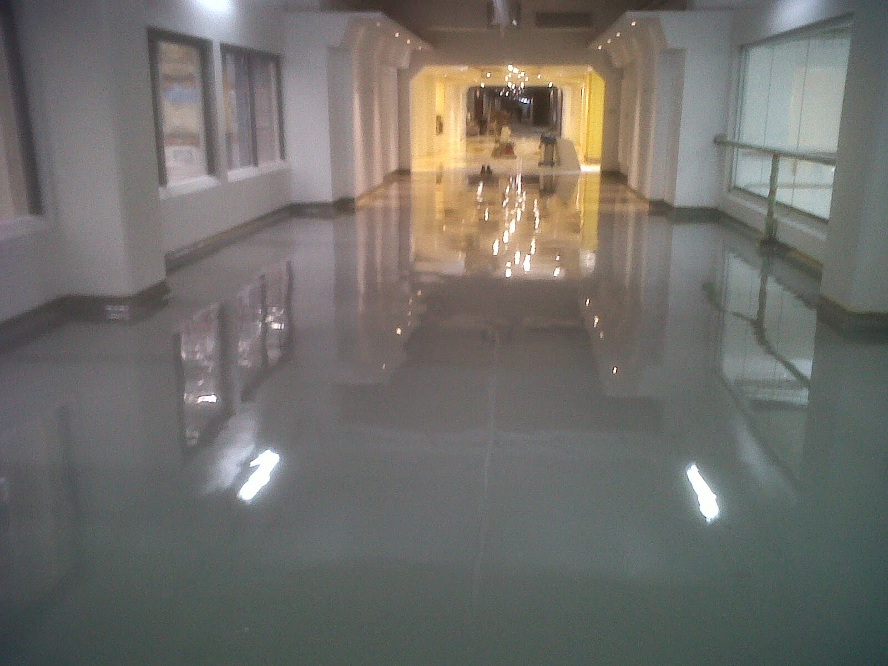

Jasa Epoxy Lantai di Jakarta Utara ialah suatu kopolimer, terwujud dari dua bahan kimia yang berbeda. Ini disebut sebagai “resin” dan “pengeras”. Resin ini terdiri dari monomer atau polimer rantai pendek dengan kelompok epoksida di kedua ujung. Epoxy resin Paling umum yang diciptakan dari reaksi antara epiklorohidrin dan bisphenol-A, meski yang terakhir mungkin akan digantikan dengan bahan kimia yang serupa. Pengeras terdiri dari monomer polyamine, umpamanya Triethylenetetramine (Teta). Ketika senyawa ini dicampur bersama, kelompok amina bereaksi dengan klasifikasi epoksida untuk membentuk ikatan kovalen. Tiap kelompok NH dapat bereaksi dengan kelompok epoksida, sehingga polimer yang diciptakan amat silang, dan dengan demikian kaku dan kuat. Pelaksanaan polimerisasi disebut “curing”, dan bisa dikontrol melewati temperatur, opsi senyawa resin dan pengeras, dan rasio kata senyawanya; pengerjaan bisa mengambil menit untuk jam. Sebagian formulasi manfaat dari pemanasan selama masa penyembuhan, sedangkan yang lainnya hanya memerlukan waktu, dan suhu ambien.
Aplikasi Epoxy Lantai Harga Murah di Jakarta Utara
Aplikasi untuk bahan epoxy berbasis luas dan mencakup pelapis, perekat dan material komposit seperti yang memakai serat karbon dan bala bantuan fiberglass (meskipun polyester, vinyl ester, dan resin thermosetting lainnya juga digunakan untuk plastik yang diperkuat kaca). Kimia epoxies dan berbagai tipe yang tersedia secara komersial memungkinkan menyembuhkan polimer yang akan diproduksi dengan jangka yang sangat luas properti. Kekuatan umum, epoxies diketahui karena betul-betul bagus kimia, adhesi dan tahan panas, sifat mekanik yang baik-untuk-benar-benar bagus dan betul-betul bagus sifat isolasi listrik. Banyak sifat epoxies dapat dimodifikasi (untuk epoxies seumpama perak yang dipenuhi dengan konduktivitas listrik yang baik yang tersedia, walaupun epoxies biasanya elektrik isolasi). Macam menawarkan insulasi panas yang tinggi, atau konduktivitas termal dikombinasikan dengan tahanan listrik yang tinggi untuk aplikasi elektronik, yang tersedia.
Painting
Dua bagian pelapis epoksi dimaksimalkan untuk layanan tugas berat pada substrat logam dan mengaplikasikan daya kurang dari bubuk pelapis panas-sembuh. Cara ini menggunakan 04:01 oleh rasio volume mixing, dan pesat kering menyediakan, tangguh bendung UV, lapisan pelindung dengan kekerasan yang amat bagus. Volatilitas yang rendah mereka dan air bersih hingga membuat mereka berguna untuk pabrik besi tuang, baja tuang, cast almunium aplikasi dan mengurangi eksposur dan gampang terbakar berita yang berkaitan dengan pelapis pelarut-ditanggung. Mereka umumnya dipakai dalam aplikasi industri dan otomotif karena mereka lebih bendung panas dari cat lateks-based dan alkid berbasis. Cat epoxy cenderung chaulk keluar karena paparan cahaya UV. Epoxies Polyester dipakai sebagai pelapis bubuk untuk mesin cuci, pengering dan lainnya “barang putih”. Fusion Bonded Epoxy Powder Coating (FBE) yang banyak digunakan untuk perlindungan korosi pipa baja dan alat perlengkapan yang diterapkan dalam industri minyak dan gas, jaringan pipa transmisi air minum (baja), pasar ini memperkuat beton, dan lain-lain. Epoxy coating juga banyak diterapkan sebagai primer untuk meningkatkan adhesi cat otomotif dan laut terlebih pada permukaan logam dimana korosi (berkarat) resistensi yakni penting. Logam kaleng dan wadah kerap kali dilapisi dengan epoxy untuk mencegah berkarat, terutama untuk makanan seperti tomat yang asam. Epoxy resin juga diaplikasikan untuk kinerja tinggi dan aplikasi lantai hias terpenting lantai teraso, lantai chip dan lantai agregat berwarna, juga digunakan sebagai perekat.
Perekat Epoxy ialah bagia nutama dari kela sperekat disebut “lem struktural” atau “lem rekayasa” (yang meliputi poliuretan, akrilik, cyanoacrylate, dankimialainnya.) perekat ini performa tinggi diterapkan dalam konstruksi pesawat terbang, mobil, sepeda, perahu, klubgolf, ski, Snowboards, dan aplikasi lain di mana obligasi kekuatan tinggi diperlukan. Epoxy lem bisa dimaksimalkan untuk memenuhi hampir aplikasi apa saja. Mereka dapat digunakan sebagai lem untuk kayu, logam, kaca, batu, dan beberapaplastik. Mereka dapat diciptakan fleksibel atau kaku, transparan atau buram/berwarna, pengaturan pesat atau pengaturan lambat. Perekat epoxy lebih baik dalam ketahanan panas dan kimia dari perekat lazim lainnya. Tenaga biasa, perekat epoxy disembuhkan dengan panas akan lebih banyak panas dan bahan kimia tahan dari pada mereka sembuh pada suhukamar. Sebagian perekat epoxy ialah terdegradasi pada suhu di atas 350° F(177 ° C). Beberapa epoxy disembuhkan oleh paparan sinarultraviolet. Epoxy tersebut awam diterapkan dalam optik, serat optik, dan kedokteran gigi.
Epoxy Di Industri
Dalam industri aerospace, epoxy digunakan sebagai bahan matriks struktur yang kemudian diperkuat dengan serat. Bala bantuan serat awam termasuk kaca, karbon, Kevlar, dan boron. Epoxies juga diterapkan sebagai lem struktural. Bahan seperti kayu, dan lain-lain yang ‘rendah teknologi’ direkat dengan resin epoksi. Salah satu contoh akan menjadi RJ.03 IBIS homebuilt pesawat desas-desus. Desain ini didasarkan pada badan pesawat kisi kayu klasik terstruktur dan berpolemik kayu klasik, internal menegang dengan busa dan benar-benar ditutup dengan kayu lapis. Karena untuk kayu lapis meliputi sayap, semuanya terpaku dengan resin epoksi.
Kegunaan Epoxy
Epoxy dipasarkan di kios-kios perangkat keras, umumnya sebagai paket yang mengandung resin dan hardener yang terpisah, yang seharusnya dicampur seketika sebelum diterapkan. Mereka juga dipasarkan di kios-toko perahu sebagai resin pembenaran untuk aplikasi laut. Epoxies umumnya tidak diaplikasikan pada lapisan luar perahu karena mereka memburuk oleh paparan cahaya UV. Mereka sering dipakai selama perbaikan perahu dan perakitan, dan kemudian lebih-dilapisi dengan cat poliuretan konvensional atau dua bagian atau laut-pernis yang memberikan perlindungan UV.
Ada dua bidang utama pemakaian laut. Zona sifat mekanik yang lebih bagus dibandingi dengan resin poliester lebih lazim, epoxy digunakan untuk pembuatan komersial dari bagian mana energi tinggi / perbandingan berat dibutuhkan. Proses kedua ialah bahwa kekuatan mereka, sifat kesenjangan mengisi dan adhesi yang sungguh-sungguh baik untuk banyak bahan termasuk kayu sudah mewujudkan booming di proyek bangunan amatir, termasuk pesawat dan kapal.
Epoxy resin digunakan dalam pembuatan bilah rotor turbin angin. Resin ini tertanam pada bahan inti, seperti kayu balsa atau foam, dan media penguat, seperti kain, serat gelas atau serat karbon. Pengerjaan ini disebut VARTM, adalah Vacuum Assisted Resin Transfer Moulding. Zona sifat yang sangat baik dan menyelesaikan baik, epoxy yaitu resin yang paling disukai untuk komposit. Epoxy resin, dicampur dengan pigmen, dipakai sebagai media lukisan, dengan menuangkan lapisan di atas satu sama lain untuk membentuk suatu ilustrasi yang lengkap.
Epoxy Dan Bahan Lainnya

Bahan Epoxy cenderung mengeras secara bertahap, meski bahan poliester cenderung mengeras dengan cepat, terutamanya jikalau banyak katalis yang dipakai. respon kimia dalam kedua kasus ialah eksotermik. jumlah besar dari campuran akan menciptakan panas mereka sendiri dan lebih mempercepat respons, sehingga awam untuk mencampur jumlah kecil yang dapat digunakan dengan cepat.
Namun umum untuk resin poliester asosiasi dan resin epoxy, sifat mereka cukup berbeda bahwa mereka benar diperlakukan sebagai bahan yang berbeda. Polyester resin umumnya energi rendah selain dipakai dengan bahan penguat seperti serat kaca, relatif rapuh kecuali diperkuat, dan memiliki adhesi rendah. Epoxies, sebaliknya, pada dasarnya kuat, agak fleksibel dan mempunyai tenaga rekat sangat baik. Hingga, resin poliester jauh lebih murah.
Epoxy resin lazimnya membutuhkan campuran yang tepat dari dua bagian yang menyusun kimia ketiga. Tergantung pada sifat yang diperlukan, rasio mungkin apapun dari 1:1 atau lebih dari 10:1, melainkan dalam tiap-tiap kasus mereka sepatutnya dicampur pas. Produk akhir kemudian plastik termo-penguasaan yang tepat. Eksistensi mereka campuran dua unsur relatif inert, sedangkan ‘pengerasan’ cenderung lebih kimia aktif dan semestinya dilindungi dari atmosfer dan kelembaban. Laju respon dapat diubah dengan menerapkan pengerasan yang berbeda, yang bisa mengubah sifat produk akhir, atau dengan membatasi temperatur.
Sebaliknya, resin poliester biasanya tersedia dalam wujud yang ‘dipromosikan’, seperti bahwa kemajuan resin sebelumnya-campuran dari cair ke padat sudah berlangsung, walaupun sangat lambat. Variabel hanya tersedia untuk pengguna adalah merubah tingkat cara kerja ini mengaplikasikan katalis, sering kali Methyl-Ethyl-Ketone-Peroxide (MEKP), yang sungguh-sungguh berbisa. katalis dalam produk akhir benar-benar akan mengurangi sifat yang diinginkan, sehingga sejumlah kecil katalis yang lebih baik, asalkan hasil pengerasan dengan kecepatan yang dapat diterima. Tingkat kesembuhan dari poliester sehingga bisa dikendalikan baik oleh jumlah katalis dan temperatur.
Sebagai perekat, epoxies obligasi dalam tiga metode: a) mekanik, karena ikatan permukaan yang kasar, b) Dengan kedekatan, sebab resin disembuhkan secara lahiriah demikian itu dekat dengan permukaan ikatan bahwa mereka susah untuk memisahkan; c) Ionically, sebab epoxy resin membentuk ikatan ion pada tingkat atom dengan permukaan ikatan. ini mempunyai substansi yang kuat dari ketiganya. Sebaliknya, resin poliester bisa hanya obligasi dengan menerapkan dua pertama, yang sungguh-sungguh mengurangi utilitas mereka sebagai perekat dan dalam koreksi laut.
Informasi Lengkap Pemesanan
Google Maps: https://www.google.com/maps/d/u/0/viewer?mid=1A8EZxqB3N9FEf6EYOkM0QscbvVcmEYqX&ll=-6.253455000062163%2C106.82859010000004&z=18
Note: https://www.facebook.com/notes/distributor-of-industrial-supply/kontraktor-jasa-epoxy-lantai/1782732822026597/
Event: https://www.facebook.com/events/1995233694078319/
Portfolio Produk: https://www.facebook.com/pg/DistributorOfIndustrialSupplyDIS/photos/?tab=album&album_id=1683674925265721
Behance: https://www.behance.net/gallery/60123971/Layanan-Jasa-Epoxy-Lantai